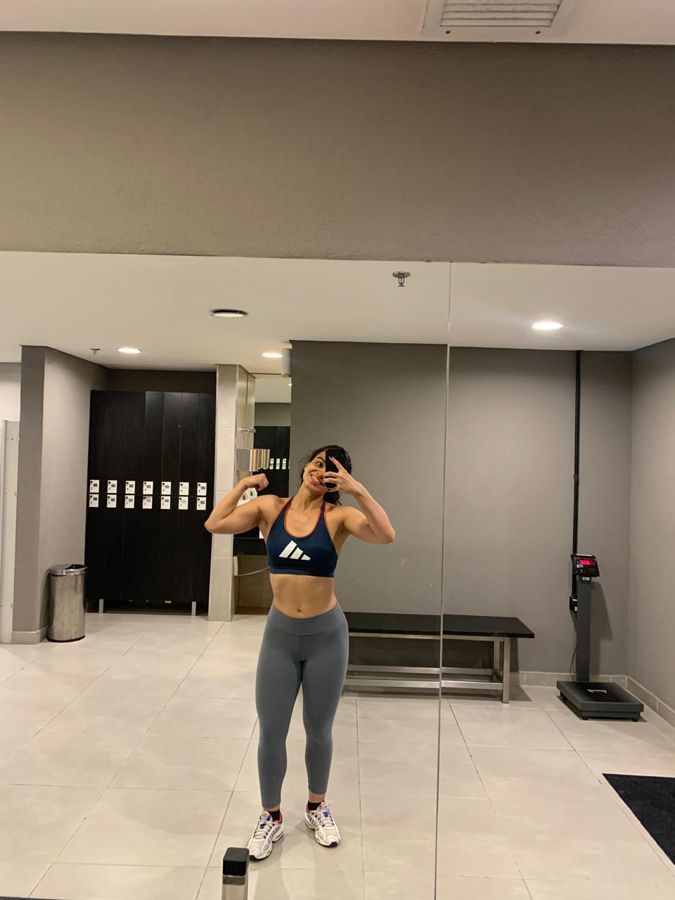

Sobre Mim
Comecei a treinar aos 16 anos, inicialmnete com o obejtivo estético.
No entanto, ao longo do tempo, descobri que a musculação vai muito além do físico.
A minha maior inspiração foi a minha mãe que sempre foi muito focada nessa área.
As mudanças positivas na vida dela eram nítidas, e isso me motivou a seguir o mesmo
caminho.
No início, sentia insegurança para treinar sozinha, mas com constância e dedicação, essa prática se tornou um hábito. Logo passei a frequentar a academia na maior parte dos dias da semana o que só se alterou decorrente de mudanças na rotina, e ver os primeiros resultados foi o que me motivou ainda mais.
Ganhei autoestima, confiança e percebi que cuidar da minha saúde não é uma obrigação, se tornou um prazer. Hoje, sinto a necssidade de treinar, pois isso isso se tornou parte essencial da minha rotina.
A musculação me ensinou a ter disciplina, me ajuda a aliviar o estresse e a ansiedadae do dia a dia e, acima de tudo, é extremamente gratifiante ver os resultados que vêm com esforço e dedicação.
